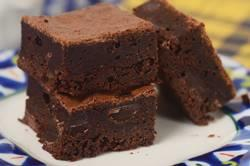

Brownies

Description
My favourite brownie recipe; soft on the inside, crusty on the outside.
Ingredients
- Dark Chocolate (150g)
- Unslated Butter (110g)
- Cocoa Powder (15g)
- Sugar (100g)
- Rum (1/2 shot)
- Large Eggs (3)
- Flour (100g)
- Lightly toasted Pecans (120g)
Steps
- Preheat your oven to 180 degrees C and place the oven rack in the center of the oven. Line the bottom and sides of a 20 cm square baking pan with foil. Butter the foil.
- Melt the chocolate and butter in a large heatproof bowl placed over a saucepan of simmering water.
- Remove from heat and whisk in the cocoa powder and sugar. Next, whisk in the rum. Then, whisk in the eggs, one at a time, beating well after each addition. Finally, stir in the flour, salt, and pecans.
- Pour into the prepared pan, smoothing the top with the back of a spoon or offset spatula. Bake for about 25 minutes or until a toothpick inserted in the center comes out with a few moist crumbs clinging to it.
- Remove from oven and let cool on a wire rack. Cut up and serve.